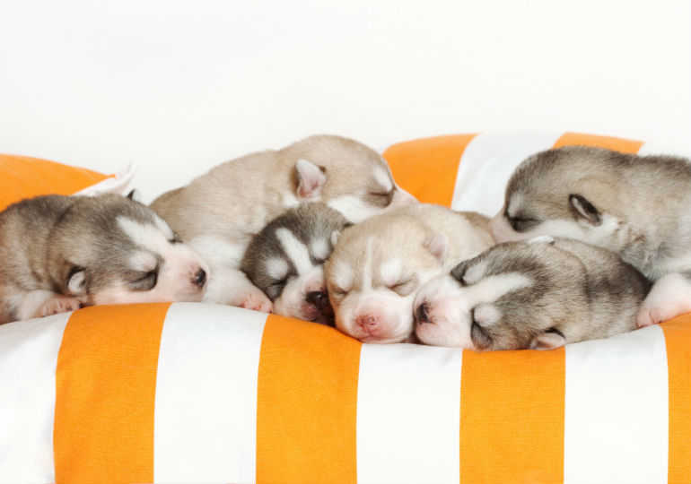
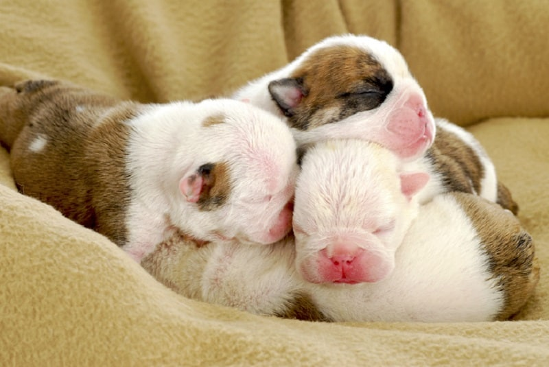
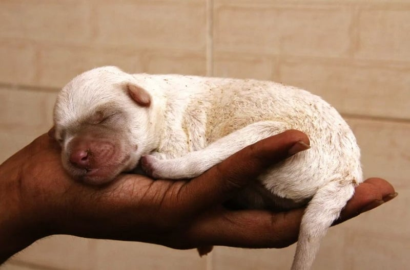
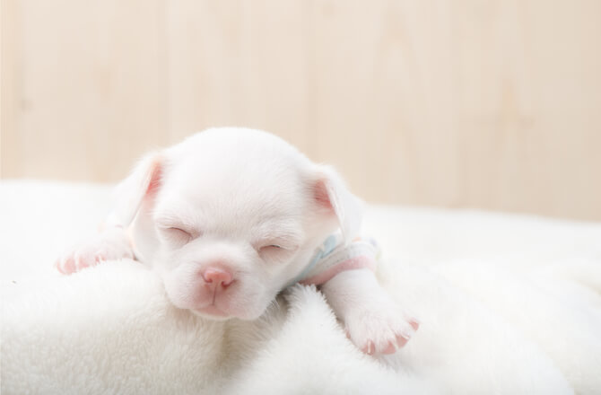
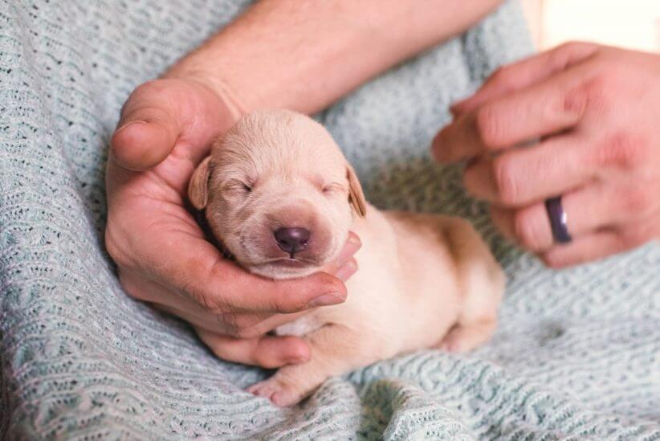
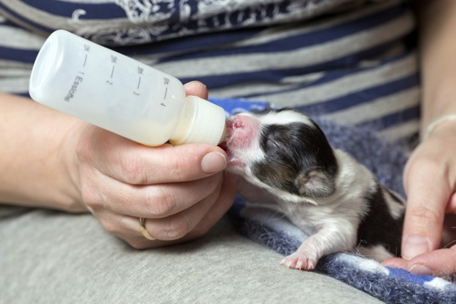
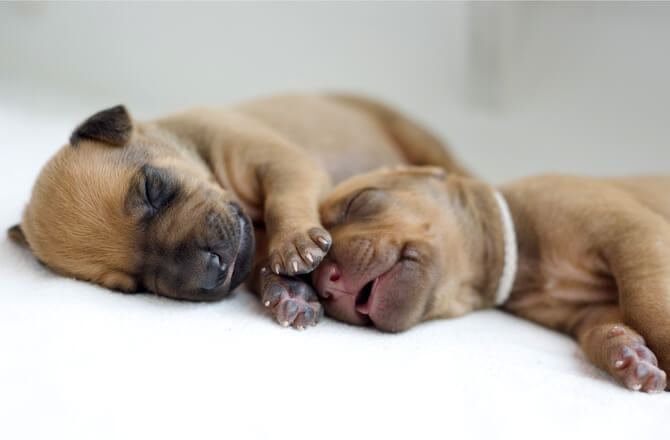
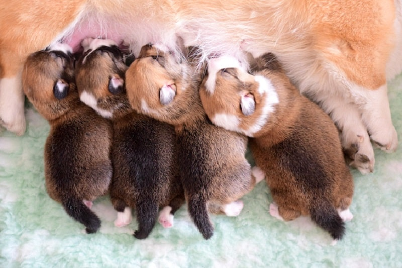

نگهداری توله سگ چند روزه و بدون مادر کار راحتی نیست و نیاز به علم و مهارت کافی داره. خیالت راحت، ما این راهو بلدیم و در این مقاله از پت پرس میخوایم قدم به قدم نگهداری از توله سگ تازه به دنیا آمده تا دو ماهگی رو باهم یاد بگیریم.
چگونه از توله سگ نگهداری کنیم؟ در هفتههای اول زندگی یه توله سگ، بیشتر وقت توله به شیر خوردن، تلاش برای گرم موندن و رشد دادن مهارت های اجتماعی اش اختصاص داده میشه. در بیشتر موارد ما آدم ها فقط غذا در اختیار سگ مادر قرار میدیم و بزرگ شدن تولهها رو تماشا میکنیم. همه کارهای حیاتی که باید برای زنده موندن توله سگ چند روزه انجام بشه، توسط مادرش انجام میشن.
در مواردی که توله سگ بدون مادره یا از مادرش جدا شده، نگهداری از توله سگ تازه به دنیا امده به عهده شماست.

شرایط نگهداری توله سگ
نگهداری توله سگ خانگی کار آسونی نیست اما شما با دونستن اصولش میتونین خیلی راحت این کار رو پیش ببرین. درواقع نگهداری ازتوله سگ شرایط خاص خودش رو داره. ساختار بدن اون با یه سگ بالغ متفاوته و شما باید چیزهایی که شامل آموزش نگهداری از توله سگ میشه رو بدونین، مثلاً این که:
- چطور از توله سگ نگهداری کنیم
- مراحل رشدش چیه
- چطور باید گرم نگهش داشت
- چی باید بخوره
- کی بهش غذا بدین
- چطور نظافتش کنین
- چه آموزشهایی رو بهش بدین
- چطور از مریض شدنش جلوگیری کنین
- چه چیزهایی ممکنه جونش رو به خطر بندازه
- و …
بنابراین ما سعی میکنیم تو این مقاله به تکتک شرایط نگهداری توله سگ بپردازیم تا شما بدونین که دارین مسیر رو بهدرستی طی میکنین یا نیازه که از یه دامپزشک کمک بگیرین.

بهترین محل نگه داری توله سگ چند روزه کجاست؟
برای نگهداری توله سگ بهتره که یه جای امن و مناسب براش آماده کنین. این مکان یا فضا باید شامل ویژگیهای زیر باشه:
- از حیوانات دیگه دور باشه
- ترجیحاً یه فضای خالی از وسایل و امن باشه
- به شما نزدیک باشه تا بتونین هر اتفاقی رو مشاهده کنین
- دمای مناسب رو داشته باشه
- دارای پنجره یا هواکشی برای تهویه باشه
معمولاً توصیه میشه که تا دو هفتگی که توله شروع به ایستادن و راه رفتن میکنه اون رو تو یه باکس یا جعبه بدون سقف نگهداری کنین. چرا؟ چون جعبه نگهداری توله سگ کمک میکنه تا توله تو جای امن خودش بمونه. هم دماش رو حفظ میکنه، هم امنیتش رو و هم راحتی. این گزینه بهترین راه ممکن برای نگهداری توله سگ در خانهست.
ولی نگهداری توله سگ در قفس نه برای فضای داخل خونه و نه برای زیر دو ماهگی پیشنهاد نمیشه. چون نگهداری از توله سگ یک ماهه واقعاً نیاز به یه فضای لطیف، تمیز و مناسب داره. این گزینه بیشتر برای نگهداری توله سگ در حیاط و باغ مناسبه اونم برای نگهداری توله سگ دو ماهه به بالا که روزهای حیاتی رشدش رو گذرونده باشه.
نگهداری توله سگ بدون مادر
روش نگهداری از توله سگ تو این یه مورد کمی حساستره. البته فقط برای یک ماه اول. چون روند تغذیه، رسیدگی به نظافت و حفظ دما رو شما باید انجام بدین که ما درباره تکتکشون در ادامه توضیح دادیم و جای نگرانی نیست. فقط باید دقت داشته باشین که توله سگ چند روزه خیلی حساسه و نباید مدام اون رو توی دست گرفت یا جابهجا کرد.
پس در اولین قدم باید فکر یه جای ثابت و امن براش باشین که هتون میگیم چه مشخصاتی داره. علاوه بر اون آمادگی تغذیه توله کوچولوتون با شیر و گرفتن نفخ و یبوستش رو هم داشته باشین.

دمای مناسب برای نگهداری توله سگ
اگه شما مسئولیت نگهداری توله سگ ولگرد یا یه توله واگذاری شده رو به عهده گرفتین باید از شرایط دمایی بدنش آگاهی داشته باشین. توله سگ های نوزاد زیر ۳ هفته برای گرم موندن به مادرشون وابسته هستن. دمای مناسب برای نگهداری توله سگ در پنج روز اول چیزی بین ۸۵ تا ۹۰ درجه ست و از روز ۵ تا ۱۰ میتونین درجه به ۸۰ و بعد به ۷۰ کاهش بدین.
به محض اینکه توله سگ نوزادی رو پیدا کردین میتونین با استفاده از یه کیسه یا بطری آب گرم گرمشون کنین. اگر هیچ وسیلهای در دسترستون نبود، با چسبوندنش به بدن خودتون و تماس دادن مستقیمش با پوست بدن میتونین گرمش کنین تا به وسایل مناسب دسترسی پیدا کنین. به آرامی پوست بدنش رو ماساژ بدین تا به جریان خون کمک کنه.
در منزل، یک پتو رو روی هیت پد یا تشک گرمایشی یا کیسه آب گرم قرار بدین و توله رو روی اون یا کنارش بگذارین. مطمئن بشین که میتونه هرموقع خواست حرکت کنه و از منبع گرما دور بشه. حواستون باشه که گرمای زیاد براش خوب نیست و اگر بی قرار شد دمای محیط رو کم کنین.
هیچ وقت اجازه ندین توله سگها خیس بشن. اگر جاشون رو کثیف کردن سریعا با دستمال مرطوب تمیز و خشکشون کنین.
توله سگها بدن حساسی دارن و باید بدنشون رو گرم نگه دارین تا مریض نشن.
نگهداری توله سگ در زمستان
گرم نگه داشتن بدن توله تو زمستان به خاطر سردی هوا طبیعتاً سختتر میشه. شما میتونین علاوه بر راهکارهای بالا از ترفند جوراب برنجی هم استفاده کنین. چون ممکنه که نتونین مدام حوله گرم کنین و دورش بپیچین یا نگران باشین که یه وقت غلت نزنه و به بخاری و اینا بخوره.
یه جوراب تقریباً بزرگ بردارین. نصفش رو با برنج خام پر کنین. ۵ دقیقه تو مایکروفر حرارت بدین و اون رو توی بستر توله سگ قرار بدین. حواستون باشه که خیلی داغ نباشه. این جوراب برنجی بیشتر از کیسه آب گرم حرارت رو نگه میداره. علاوه بر اون میتونین با چیدن این جورابها دورتادور یا تو باکس توله، شرایط نگهداری از توله سگ رو ارتقا بدین و میزان غلت زدنهاش کنترل بشه. تازه اینجوری حس میکنه که به تولههای دیگه یا مادرش تکیه کرده و کمتر بیتابی میکنه.
برای نگهداری توله سگ در زمستان از لامپ حرارتی هم میتونین استفاده کنین. فقط باید حواستون باشه هوا زیاد از حد گرم نشه و هیدراته بودن بدن توله رو بهم نریزه.
مراحل رشد توله سگ
برای مراقبت از توله سگ باید روند رشدش و نیازهایی که تو هر دوره رشد داره رو بدونین تا عملکرد بهتری داشته باشین. تو جدول زیر سعی کردیم نکات کلیدیای که باید از هر مقطع رشد توله سگ بدونین رو براتون بیاریم.
| سن | دریافت اصلی | نیازها |
|---|---|---|
| ۰ تا ۳ هفتگی | هیچ محرکی رو دریافت نمیکنه | خواب زیاد و نوازش |
| ۳ تا ۸ هفتگی | شروع ایستادن، راه رفتن و دویدن | آموزشهای اولیه و اجتماعی شدن |
| ۸ تا ۱۲ هفتگی | شروع درک احساس ترس | آموزشهای مربوط به استقلال و حفظ فاصله |
| ۱۲ تا ۲۴ هفتگی | شروع به جویدن هر چیزی و کشف | بازی، ورزش و تخلیه انرژی |
وزن توله سگ تازه به دنیا آمده چقدر باید باشه؟
وزن نوزاد سگها بستگی به نژاد سگ داره ولی طبق یه قانون کلی میشه گفت در طول هفته اول زندگی یه سگ، وزنش دو تا سه برابر میشه.
افزایش وزن روزانه ۱۰ تا ۱۵% برای توله سگها تا ۱ ماهگی کاملا نرمال و طبیعی هست.
توله سگهای نوزادی که روزانه کمتر از این میزان وزن اضافه کنن، ممکنه زنده نمونن.

غذای توله سگ تازه به دنیا آمده تا دو ماهگی
تغذیه مهمترین فاکتور در رشد و نمو توله سگهاست. توله سگ نوزاد از شیر مادرش تغذیه میکنه. شیر مادر همه مواد لازم و مورد نیاز برای رشد و تامین انرژی توله رو داره.
اگر قراره از توله سگ چند روزهای مراقب کنین که مادر نداره، بهتره در مورد تغذیهاش با شیر خشک توله سگ و شیر دادن با استفاده از شیشه شیر، با دامپزشک مشورت کنین.
شیر خشک مخصوص توله سگ رو میتونین به راحتی از پت شاپهای آنلاین معروفی مثل دیجی کالا سفارش بدید. البته سایتهای معتبر دیگهای هم هستن که میتونین ازشون خرید کنین. ما تو مقاله «پت شاپ چیست» بهترین پت شاپهای ایران معرفی کردیم که میتونین از اونها خرید کنین.
فراموش نکنین که تولهها بسیار حساس و آسیب پذیر هستن و اگر نحوه درست استفاده از شیشه شیر رو بلد نباشین ممکنه شیر داخل ریه توله سگ نوزاد بره و مشکلات جدی براش درست کنه. بهتون پیشنهاد میکنیم حتما مقاله غذای توله سگ رو بخونید تا در مورد برنامه غذایی مناسب برای توله سگتون از بدو تولد تا بلوغ و بزرگسالیش اطلاعات کافی داشته باشید.
اگه وقت ندارین این مطلب بخونین میتونین، به فایل صوتی مقاله گوش بدین.
شیر دادن به توله سگ
نگهداری از توله سگ شیرخوار تکنیکهای ریزی داره که باید بدونین. حتما برای شیر دادن به توله سگ تازه به دنیا اومده از شیر خشک مخصوص توله سگ استفاده کنین. شیر گاو یا هر شیر دیگهای میتونه باعث اسهال در توله سگها بشه.
چون هضم این نوع از شیر برای معده سگ سخته و از نظر مواد مغذی بیشتر مناسب معده گوسالهست. کلاً علت اسهال در توله سگ شیرخوار میتونه حجم زیاد شیر یا استفاده از شیر نادرست برای تغذیهاش باشه. در غیر این صورت باید حتماً با دامپزشک مشورت کنین که توله مشکل داخلی نداشته باشه.
برای فهمیدن مقدار شیری که باید به توله بدین به جدول روی بسته بندی نگاه کنین. تولهها در سنین مختلف به میزان انرژی و مواد غذایی مشخصی نیاز دارن که با توجه به پروسه ساخت شیر توسط کارخانه سازنده تعیین و روی بسته بندی درج میشن.
برای اینکه این کار به صورت درست و اصولی انجام بدین، حتما مطلب شیر دادن به توله سگ رو هم مطالعه کنین.

فرمول موقت به عنوان غذای توله سگ چند روزه
اگر به شیر خشک دسترسی ندارین میتونین چند وعده اول از فرمول زیر برای غذا دادن به توله سگ استفاده کنید.
البته تاکید میکنیم که این فرمول موقتی هست و باید حتما با شیر خشک مخصوص جایگزین بشه:
- ۱ لیوان شیر بُز
- ۱ عدد زرده تخم مرغ (سفیده رو جدا کنید)
- ۱ لیوان ماست پرچرب
- نصف قاشق چایخوری عسل
اینا رو باهم مخلوط کنید، داخل شیشه شیر بریزید و به توله بدید.
توجه: اگر شیر بز در دسترستون نیست موقت میتونید ۲ لیوان و نیم شیر گاو پرچرب (۳% چربی) را اونقد بجوشونید تا حجمش به ۱ لیوان برسه و به جای ۱ لیوان شیر بز ازش استفاده کنید.
شیر دادن به توله سگ نوزاد چه مدت یکبار باید انجام بشه؟
توله سگها تا یک هفتگی هر ۲ ساعت یک بار باید شیر بخورن و این به معنی اینه که اگر نگهداری از یه توله سگ تازه به دنیا اومده رو بر عهده گرفتین، باید یک هفته بدخوابی رو تحمل کنین!
هرچی تولهها بزرگتر میشن، فواصل بین شیر خوردنشون بیشتر میشه. به تولههای زیر ۱۰ روزه هر ۳ ساعت و از ۱۸ روزگی هر ۵ تا ۶ ساعت باید شیر بدین.
در ۱ ماهگی از ۶ وعدهای که توله در طول روز غذا میخوره، ۴ وعدهاش شیر و ۲ وعدهاش غذای جامد میتونه باشه.
توله سگها میتونن از ۲ ماهگی غذای جامد بخورن و خوردن شیر رو به طور کامل کنار بذارن ولی فراموش نکنین که کم کردن وعدههای شیر و جایگزین کردنشون با غذای جامد رو به صورت آهسته و تدریجی انجام بدین.
توی ویدیوی زیر همه نکاتی که باید قبل از خرید توله سگ تا بعد از خرید و روش نگهداری از اونو که باید بدونید رو گفتیم که پیشنهاد میکنیم حتما تا آخرشو ببینید.
زمان آب دادن به توله سگ
آب دادن تو مسیر نگهداری توله سگ یکی از مهمترین دغدغههای سرپرستاست. در واقع دادن آب به توله سگ باید از ۳-۴ هفتگی شروع بشه. وقتی که اون رو با غذای جامد آشنا میکنین و کمکم از شیر مادر یا شیر گرفته میشه. حتی دادن آب زودتر از موعد هم میتونه باعث آسیب جسمانی به تولهتون بشه چون نیازی بهش نداره و داره مایعات بدنش رو از همون شیر تامین میکنه و بدنش رو هیدراته نگه میداره.
بعد از ۳-۴ هفتگی و مصرف غذای جامد هم هر ۲ ساعت یک بار، حدود نصف فنجون آب باید بهش بدین.
بردن توله سگ به دامپزشکی، چه وقت و چگونه؟
اگر تولهها رو صحیح و سالم بزرگ کردین، پیشنهاد میکنم در ۱ و نیم ماهگی برای اولین بار به کلینیک دامپزشکی ببرینشون.
دامپزشک به توله سگ شما قرص ضد انگل میده و از نظر فیزیکی معاینهاش میکنه.
چه علائمی در توله سگ خطرناکه و باید براشون به دامپزشک مراجعه کنیم؟
توله سگهای چند روزه به بیماری بسیار حساس هستن پس توجه به علائم بیماری در سگ و مراجعه سریع به دامپزشک در دوران تولگی بسیار مهم است.
- بی اشتهایی (مطلب مرتبط: علت غذا نخوردن سگ)
- عدم افزایش وزن مناسب
- استفراغ
- اسهال سگ
- سختی در تنفس
- سرفه یا صدای تنفسی
- ناله کردن مداوم
- رنگ پریده شدن لثهها
- ترشح از چشم یا ملتهب شدن چشم
- ترشح از بینی
- عدم دفع ادرار یا مدفوع


تربیت یکی از مهمترین بخشهای نگهداری از توله سگ!
طبیعتاً توله سگ چند روزه نیازی به آموزش نداره و شما میتونین هفتههای اول رو صرف مراقبت از توله سگ بکنین. اما از هفته دوم به بعد که توله شروع به ایستادن و راه رفتن میکنه، آموزش توله سگ رو به برنامه نگهداری از توله سگ خانگی خودتون اضافه کنین.
اگه هیچ اطلاعی درباره نگهداری و آموزش توله سگ ندارین، پیشنهاد میکنیم که نگاهی به مقاله تربیت سگ بندازین تا بدونین که منظور ما از فرمانهای اولیه و آموزشهای مقدماتیای در مراحل پیش رو، چیه. همون طور که در جدول مراحل رشد توله سگ اشاره کردیم، تولهها از ۲ -۳ هفتگی به بعد آماده آموزشن.
مهمترین مراحل تربیت توله سگ
مهمترین مراحل برای این کار به شرح زیر است:
- از هفته چهارم مقدمات اجتماعی کردن شروع بشه: در آغوش گرفتن، آشنایی با اعضای خانواده، آشنایی با حیوانات دیگه، بازی و جستوجو.
- تو ۷ الی ۸ هفتگی آموزشهای استقلالطلبی، حفظ فاصله و تنها موندن باید شروع بشه: استفاده از پارک، موندن در اتاق، بازی برو و بیار با اضافه کردن فاصله مکانی.
- از ۸ هفتگی به بعد خروج از خونه باید تو برنامه قرار بگیره: شما باید مثل یه مادر مراقب تولهتون باشین، از رفتارهای هیجانی و ناگهانی خودداری کنین، ترسهاش رو بپذیرین.
برای دونستن جزئیات تکتک این مراحل و یادگیری مراحل عملی آموزش میتونین از کتاب تربیت جامع سگ پت پرس کمک بگیرین. سرفصلهای کتاب به صورت رایگان برای شما قرار گرفته تا با انواع آموزشهای موجود در کتاب آشنا بشین.
زمان راه رفتن توله سگ
تولهسگها از زمانی که میتونن دنیای اطرافشون رو ببینن شروع میکنن به غلت زدن و تقلا برای حرکت. از سه هفتگی یا ۲۱ روزگی اونا شروع به ایستادن و راه رفتن میکنن و در ۲۸ روزگی دیگه میتونن کامل راه برن. البته زمان راه رفتن توله سگ ممکنه تو هر نژادی کمی دیرتر یا زودتر بشه ولی معمولاً تو همین بازه زمانی اتفاق میفته.
چطوری به توله سگ بدون مادر کمک کنم دستشویی کنه؟
توله سگها در طول هفتههای اول زندگیشون برای دستشویی کردن به مادرشون نیازمند هستن. اونا نمیتونن به صورت مستقل ادرار و مدفوع دفع کنن.
سگ مادر، به صورت غریزی با لیسیدن ناحیه تناسلی توله سگ نوزاد عمل دفع ادرار و مدفوع رو در اونها تحریک میکنه.
بهتره برای این کار از پنبه یا تکهای پارچه استفاده کنین و اون رو توی آب گرم بزنین تا گرما و رطوبت زبان مادر رو برای توله تداعی کنه.
در حدود ۳ تا ۴ هفتگی تولهها توانایی دستشویی کردن بدون کمک رو به دست میارن.

سوالات متداول درباره نگهداری از توله سگ
نگهداری از توله سگ خانگی میتونه یه مسیر پر از چالش اما دلچسب باشه. چیزی که هر کسی نمیتونه اون رو تجربه کنه. دونستن جواب سوالات زیر شاید به تکمیل اطلاعاتتون کمک کنه.
هزینه نگهداری توله سگ چقدره؟
این هزینه معمولاً یه حدود ثابت داره اما همین حدود هم بستگی به نژاد توله شما، شرایطی که میخواین اون رو نگه دارین و وسایلی که براش میخرین، داره. درباره این موضوع به طور مفصل در این مطلب صحبت کردیم: هزینه نگهداری از سگ.
توله سگ را کی از مادرش جدا کنیم؟
بهتره که تا هفته سوم که توله فقط میخوره و میخوابه و درکی از محیط اطرافش نداره، کنار مادر بمونه و بعد کمکم با گرفته شدن از شیر اون رو از مادرش جدا کنیم.
توله سگ از چند ماهگی پارس میکند؟
از سه هفتگی به بعد که توله تمام حواس خودش رو درک میکنه، میتونین صداش رو بشنوین اما اون چیزی که شبیه به پارس کردن باشه تقریباً از یک ماهگی شنیده میشه.
توله سگ بعد چند روز چشم باز میکند؟
از سه هفتگی به بعد توله سگ قدرت بینایی خودش رو به دست میاره و شروع به تماشای دنیای اطرافش میکنه.
توله سگ از چند ماهگی غذا میخورد؟
بعد از ۳-۴ هفتگی روند تغذیه توله با غذای جامد شروع میشه.

تجربه جذاب نگهداری از توله سگ بدون مادر
نگهداری از توله سگ تازه به دنیا آمده شاید اولش سخت و طاقت فرسا باشه، ولی وقتی مراحل اولیه زندگی رو پشت سر گذاشتن و به سگ بالغ تبدیل شدن، نتیجه زحماتتون رو میبینین. البته مراقبت از سگ بالغ و بزرگسال هم چالشهای خاص خودش رو داره و اگه دوست دارین در موردشون اطلاعات بیشتری داشته باشین، حتما مطالب نگهداری از سگ رو هم بخونین.
رابطهای که بین شما و تولهای که از چند روزگی بزرگش کردین، به یه رابطه دوستی عمیق و جدا نشدنی تبدیل میشه که هر دو ازش لذت خواهید برد.
آیا شما تا به حال از یه توله سگ نوزاد مراقبت کردین؟ مراقبت از اون چه سختیهایی داشته؟ الان اون سگ چند سالشه؟ چه توصیههایی برای کسایی دارین که یه سگ نوزاد پیدا کردن؟
نظراتتون رو در قسمت دیدگاهها با ما در میون بگذارین.


سلام ، من یه توله ژرمن یک ماهه دارم راستش از وقتی که داره دندوناش در میاد همش در حال گاز گرفتنه دست و پاس براش دندونی هم خریدیم اما علاقه ای زیاد بهش نداره ، چه راهکاری شما پیشنهاد میدید و اینکه جای دستشویی کردنشو از چند ماهگی میشه بهش آموزش داد؟؟ ممنون
سلام فرزاد عزیز،
از همین حدودا میتونین آموزش دستشویی کردنشو شروع کنین. برای گاز نگرفتنش غیر از اینکه لازمه آموزش ببینه که کار درستی نمیکنه میتونین تشویقیای جویدنی (مثل استخوان قلم بزرگ و تشویقیای سفت) یا اسباب بازی جویدنی هم براش تهیه کنین. مواقعی که گاز نمیگیره حتما بهش تشویقی بدین تا ترغیب بشه. میتونین در این مواقع بطور مثبت حواسشو پرت یه فعالیت دیگه کنین.
اگه به راهنمایی نیاز داشتین برای تربیتش میتونین این کتاب رو مطالعه کنین:
کتاب الکترونیکی تربیت سگ ژرمن شپرد (از توله تا نگهبان)
سلام خسته نباشید دکتر جان ی توله سگ ۱۰ روزه داریم بهش شیر گاو میدم لازمه که حتما شیر خشک بدم دکتر جان لازم به یاد اوری که شیر را کاملا میجوشانم وبعد از سرد شدن بهش میدم
سلام امیرعلی عزیز،
درکل شیر خشک (چه مخصوص چه انسانی بدون لاکتوز) گزینه ی بهتری از شیره و مواد غذایی رو به اندازه بهش میرسونه. اما اگه امکانشو ندارین با همون شیر هم میتونین پیش برین فقط ترجیحا بجای شیر معمولی شیر بدون لاکتوز بهش بدین که مشکلات گوارشی پیدا نکنه. بهترم هست که شیرو ولرم بهش بدین تا سرد.
سلام من یه توله شیتزو دارم ۱۰ روزشه خیلی شیر میخوره میخوام بدونم مشکلی داره یا بدنش احتیاج داره ب این شیر بعدشم شبارو خوب میخوابه ولی صبح از ساعت ۷ ب بعد بیدار میشه نق زدن تا ساعت ۱۲ ن شیر میخوره ن هیچ چیز دیگ هرکاریم میکنم مشکلشو نمیفهمم
سلام پیمان عزیز،
تا حدود یکی دوماهگی تنها چیزی که وعده ی اصلیشونو تشکیل میده شیر هست بنابراین غیرعادی نیست. بعد هر وعده هم لازمه دستشوییش رو بگیرین (با ماساژ مقعد با پنبه و آب ولرم)
موارد ذکر شده توی همین مقاله رو هم دنبال کنین احتمال زیاد مشکلتون حل میشه.
سلام خسته نباشید بنده یه توله سگ ۶ روزه از نژاد پیکینیز دارم و ازش نگهداری میکنم و بهش شیر خشک مخصوص میدم اما یه سوال داشتم این توله سگ خیلی دیر به دیر مدفوع میکنه مثلا روزانه یک یا دوبار میخواستم بدونم طبیعی هستش و اینکه مدفوع نکردن توله سگ تا چه زمانی میتونه طبیعی باشه؟
سلام امیر عزیز،
میشه گفت طبیعیه. بسته به تعداد وعده هایی که در روز شیر میخوره، مقدار آبی که به بدنش میرسه، مارک شیرخشک و … یه مقدار ممکنه تعداد دفع متغییر باشه ولی همین که دفع داره خوبه.
گفته میشه بیشتر از یک نهایتا دو روز اگه دفع نداشت حضوری به بیمارستان دامپزشکی مراجعه کنین که اقدامات درمانیو براش انجام بدن.
سلام امیدوارم حالتون خوب باشه یک سگ نزدیک خونه ما ۷ تا توله به دنیا آورده من از یکیشون خیلی خوشم میاد میخوام برش دارم( ماده هست).. من و مامانم هر روز براشون غذا میبریم ( البته برای مادرشون) خانم دامپزشک میشه راهنماییم کنید که آیا این کار درسته؟ این کارو بکنم؟ ممنون از سایت خوبتون ولی اگه بیشتر راهنماییم کنید ممنون میشم❤❤❤
سلام ستایش جان،
برای اینکه از تولش نگهداری کنین بهتره بذارین توله ها حدودا دو ماهشون بشه که مادرشون از شیر بگیرتشون و وابستگی آنچنانی بینشون نباشه.
خیلی ممنون از راهنماییتون چشم❤
سلام من ی توله ۲۰روزه دارم به ندرت مدفوع میکنه…ایا این طبیعیه؟؟
سلام پروانه جان،
دستشوییش رو با پنبه و آب ولرم میگیرین؟ اگه شیرخشک بهش میدین معمولا وقتی غلظتش زیاد باشه دچار یبوست میشن. به هرحال بیشتر از یک روز دستشویی نکردن توله سگ طبیعی نیست و باید علتش بررسی بشه. درصورت امکان حضوری به بیمارستان دامپزشکی مراجعه کنین یا میتونین از سرویس مشاوره آنلاین استفاده کنین:
با مشاوره دامپزشکی آنلاین کنار شما هستیم (سوال مستقیم و تخصصی از دامپزشکان پت پرس)
سلام خسته نباشین من ۴تا توله سگ دارم همراه با مادرشون ک ۲ هفتس دنیا اومدن ولی مادرشون فقطشیر میده پیششون زیاد نمیمونه
ما شیر خشک هم میدیم بهشون ولی شب که میشه همش گریه میکنن دلیلش چیه که همش جیغ میزنن گریه میکنن
سلام هستی جان،
معمولا هر چندساعت یکبار نیاز دارن شیر بخورن، درکنارش( نیم الی یک ساعت بعد هر وعده) اگه مادرشون دستشوییشون رو نمیگیره لازمه شما بهشون کمک کنین با ماساژ مقعد با پنبه و آب ولرم.
سلام … ممنون از سایت خوبتون و مطالب مفیدی که قرار میدید
میخواستم بدونم توله سگ ها بعد از زدن واکسن دو ماهگی درد و بیحالی یا علائم دیگه ای دارند؟
سلام یاسمین جان،
بله یه چندروز بعد زدن واکسن ها حالت تب و بیحالی پیدا میکنن که طبیعیه نگران نباشین.
میتونین برای راهنمایی بیشتر این مقاله رو مطالعه کنین:
همهچیز دربارهی واکسیناسیون سگ، واکسنهای ضروری و برنامه زمانی صحیح!
سلام
بریدن گوش سگ باعث ترسو شدنش میشه؟
سلام علی عزیز،
خیلیا به اشتباه گوش سگ رو میبرن که سگ بگیری بشه، ولی این موضوع صحت نداره و کاملا با اخلاق و حقوق حیوانات مغایرت داره. میشه با آموزش مناسب بدون اینکه نیاز باشه گوش یا دم بریده بشه اونارو به خوبی برای نگهبانی تربیت کرد.
سلام خسته نباشید ببخشید من ۱توله شی هواهوا ۱ماهه گرفتم شپش داره چیکار کنم میتونم ببرمش حموم؟واینکه میشه یک راهکار خوب برای درمانش بگین و یک شماپوی خوب ضد شپش معرفی کنید ممنون میشم.
سلام فاطمه جان،
مطمئنین شپش بوده و کک نیست؟ اگه امکانش رو دارین عکسشون رو برامون ارسال کنین تا بتونیم راهنماییتون کنیم:
با مشاوره دامپزشکی آنلاین کنار شما هستیم (سوال مستقیم و تخصصی از دامپزشکان پت پرس)
سلام من یک پوینتر دارم که از ۲ ماهگی دارمش البته دوتا بودن ولی یکیشون به خاطر بیماری اسهال خونی مرد،اینم داشت میمرد به زور دارو و سرم زنده موند،یک هفته تا صبح بالا سرش بیدار بودیم من و خانومم تا سرپا شد،الانم خودش ۹ تا توله داره که یکیشون کم خونی داره و تحت درمانه،الان با خودم همه جا میبرمش چون هر یک ساعت باید شیر بخوره،مادرش هم بهش شیر نمیده و تمیزش نمیکنه،خلاصه اینا رو گفتم که اگه واقعا علاقه دارید سگ بیارید و نگه دارید،واسه دو ماه یا سه ماه سگ نگیرید اون حیون بهتون وابسته میشه و بعد از جدا شدن از شما افسردگی میگیره،برای نگهداری از سگ باید مسئولیت پذیر باشید.یا حق
سلام علی عزیز،
ممنون که تجربتون رو با ما به اشتراک گذاشتین دقیقا همینطوره که میگین 🙂
سلام و خسته نباشید. من یک شیتزو فلت چهل و هشت روزه دارم. دو روز هستش که هر چیزی که اطرافش هست رو گاز میگیره. بالشش- دست و پاش- لباس ها- انگشت من.
من قبلا چون میدیدم که لثه اش برای دندون در آوردن میخاره اجازه میدادم بهش که انگشتمو گاز بگیره. اما الان که دندون هاش تقریبا دراومده و زورش هم زیاد شده دیگه نمیتونم. و علاوه بر این گاز گرفتن پنجه های خودش هم اضافه شده.
میترسم که نشونه از یک بیماری روانی باشه این کارهاش … یا اینکه عادتش بشه. میشه علتش رو بهم بگید و راه ترک دادنش هم معرفی کنید؟
سلام یاسی جان،
وقتی قبلا بهش اجازه میدادین براش عادت شده و فکر نمیکنه که کار بدی انجام میده. درواقع روش درست این بود که بجای انگشتتون براش اسباب بازی و تشویقیای جویدنی فراهم میکردین که فقط اونارو گاز بگیره. مواقعی هم که چیزای غیرعادیو گاز میگیره و شما دعواش میکنین یا هر عکس العملی بهش نشون میدین از اون برای جلب توجهتون استفاده میکنه. درواقع باید آموزش ببینه چیزای مناسبو گاز بگیره و فرامین مقدماتیو ازتون گوش بده.
این کتاب میتونه راهنماییتون کنه:
تربیت سگ شتیزوتریر، شیتزو و تریر
توله سگ ۱۵ روزه نژاد پیکینیز تازه گرفتم و الان یک روز گذشته و هنوز مدفوع نکرده و فقط ادار میکنه دستور عمل رو هم انجام دادم میحواستم بدونم تعداد دفعات طبیعی مدفوع چجوریه
سلام آرمین عزیز،
ایده آلش اینه که نیم الی یک ساعت بعد هر وعده ی غذایی دفع داشته باشن ولی هرچی فیبر غذا پایینتر باشه، غلظت شیرخشک میزون نباشه یا بدنش کم آب بشه دفعات کمتر میشن. درکل بیشتر از یکی دو روز این حالت طبیعی نیست.
سلام من یه از یه سگ خیابانی چندماهی هست اوردمش خونه مراقبت میکنم ازش ۶تا توله داره امروز نمیدونم چرا چهارتا از توله هاش رو کشتتوروخدا کمکم کنید اون دوتا توله رو از پیشش برداشتم هرچی سر و صدا میکنه نمیدمشون بهش میخام سگ مادر رو بندازم بیرون از خونه تا ادب بشه دیگه توله هاش پیش خودم میمونن و بزرگشون میکنم به نظرم لیاقت مادر بودن رو نداره خیلی اعصابم خرابه
سلام آریای عزیز،
ممنون از حسن نیتتون.
توی حیوونا معمولا پیش میاد که مادر به دلایلی مثل استرس، شلوغ بودن جای نگهداری و تجمع زیاد دورش، تجربه ی اول، یا اینکه تشخیص بیماری یا عقب موندگی توی توله ها بده ممکنه به ناچار بچه هارو ازبین ببره چون براساس غریزشون و اصل بقا وقتی توله ای ضعیف و بیمار باشه برای اینکه شانس بقا و سلامتی به بچه های سالم داده بشه اونارو از بین میبرن. برای همین سعی کنین مادرو درک کنین و از روی عصبانیت باهاش برخورد نکنین. فقط حواستون به دوتا توله سگ باقیمونده باشه.